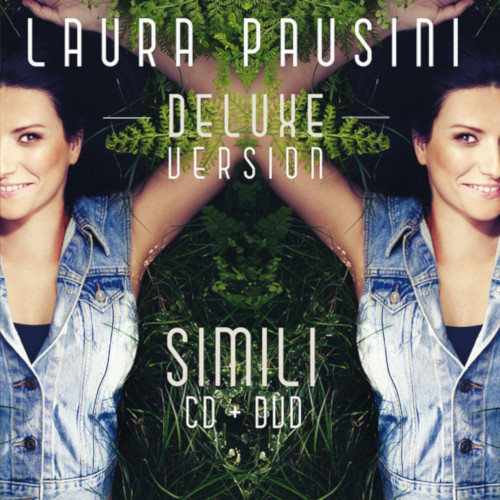
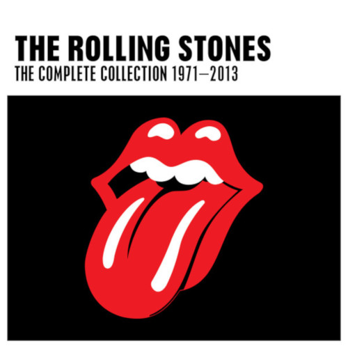

 |
 |
|
Unplugged |
Simili |
The Complete Colecction |
Eric Lapton |
Laura Pausini |
The Rolling Stones |
"Eric Clapton was 'unplugged' in more ways than one at that performance. There, in front of a large studio audience - and later an enormous MTV and record-buying audience - an artist who is know to be very shy dealt with the most painful experience anyone could ever imagine - the tragic loss of his son, Conor." |
La copertina dell'album ritrae Laura Pausini distesa in un prato; nel retrocopertina quattro ragazzi distesi anch'essi nell'erba ognuno con delle caratteristiche diverse: chi ha dei tatuaggi, chi ha gli occhi a mandorla, chi è scuro di pelle; il messaggio vuole indicare che in fondo siamo tutti simili. |
The three-disc box set Singles Collection: The London Years contains every single the Rolling Stones released during the '60s, including both the A- and B-sides. It is the first Stones compilation that tries to be comprehensive and logical -- for all their attributes, the two Hot Rocks sets and the two Big Hits collections didn't present the singles in chronological order. |
| Leer más... | Leer más... | Leer más... |